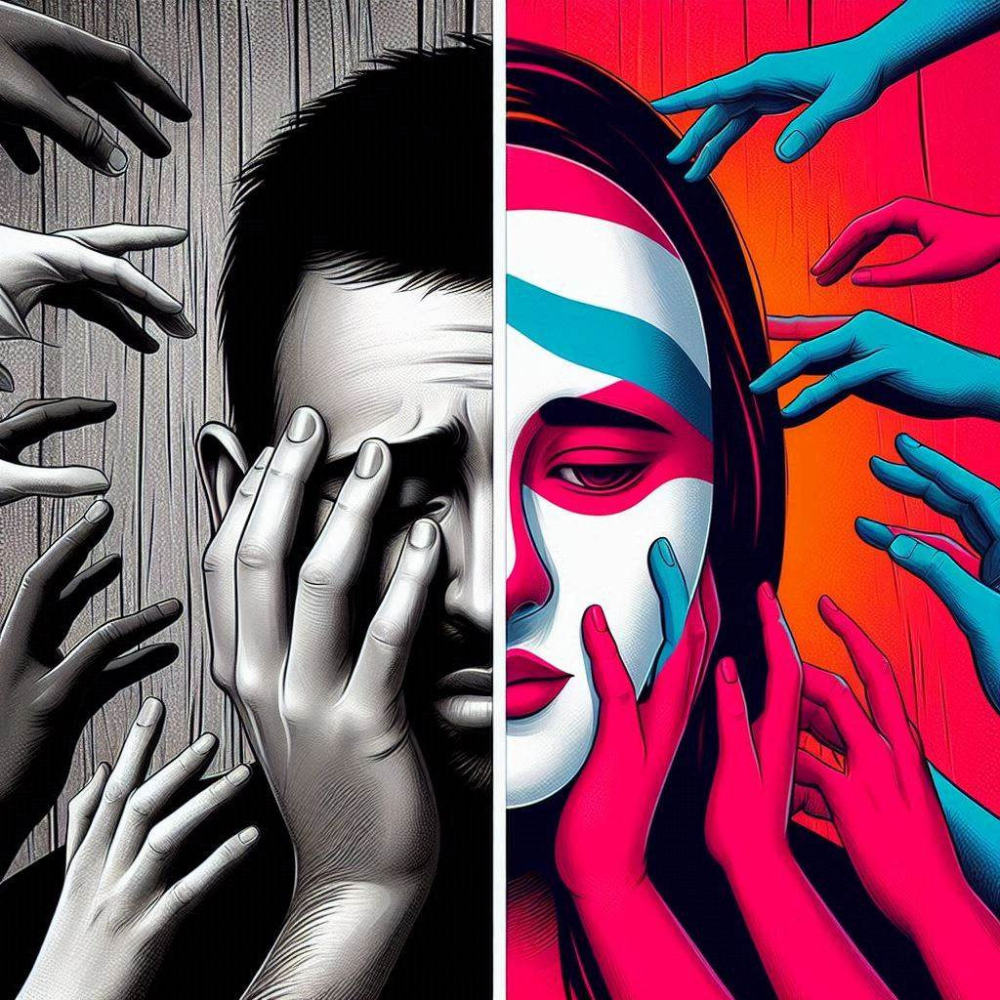

Mind Matters
Raising awareness about mental health issues

Reducing stigma associated with mental illness
Promoting mental health resources and support
Mental Health Facts
- Mental health issues affect millions of people worldwide
- Stigma can prevent individuals from seeking help
- Access to mental health resources is often limited or unevenly distributed